A garden party's success rarely comes down to one single impressive element.
It comes down to a handful of decisions working together, theme, timing, food that's actually manageable, rather than one showstopping centerpiece carrying the whole event on its own.
This covers that full picture, start to finish.
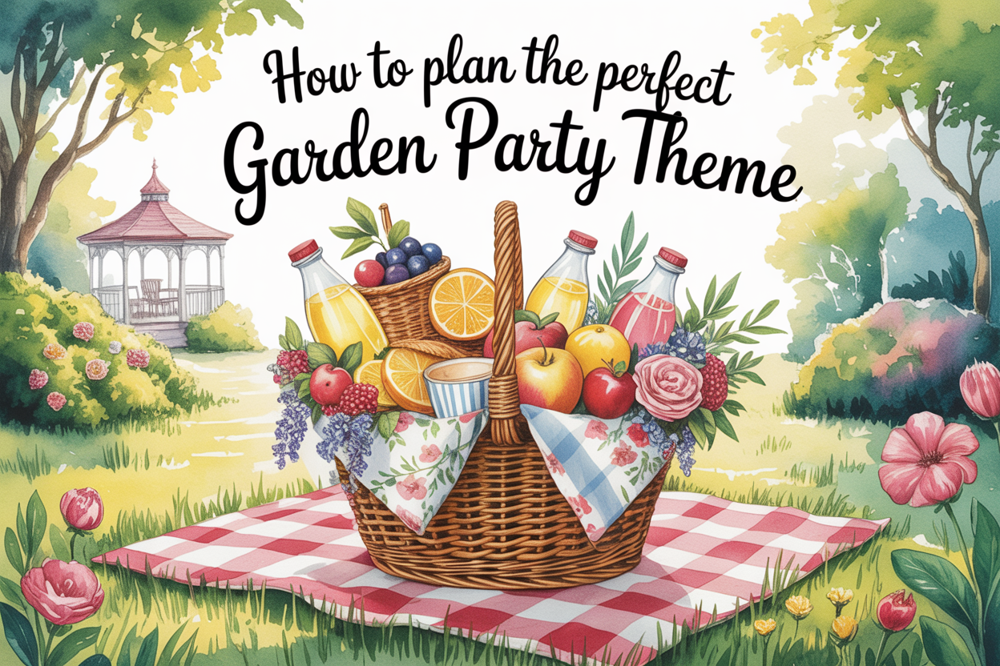
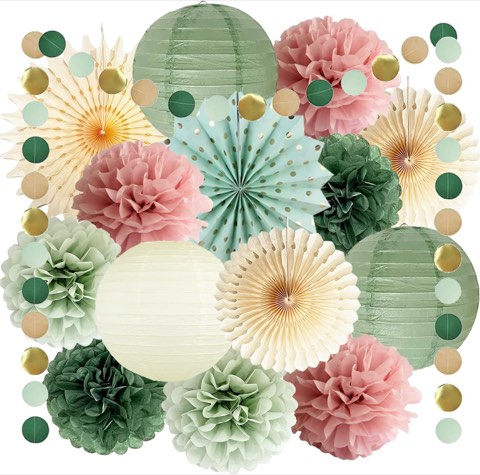
Sage Green and Dusty Pink Party Decorations, Tissue Pom Poms and Paper Lanterns
Shop on AmazonStart With the Essentials Checklist
Seating for every guest, shade or a weather backup plan, enough food and drink, lighting for after dark, and a playlist cover the true non-negotiables.
Everything else on this list is enhancement, these five are what actually need to be locked down well before the date arrives.
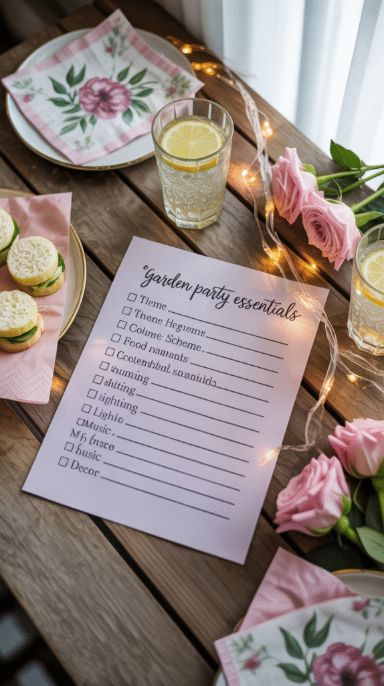
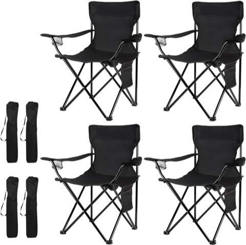
Damei Century Folding Camping Chairs, 4 Pack, Portable for Beach, Lawn and Yard
Shop on Amazon
Add the Small Extras That Matter
A few favors, a guest book, or a small detail tied to the theme round out the experience without requiring much extra effort on the host's part.
These are the details guests tend to remember and mention afterward, even though they're rarely the most expensive part of the party.
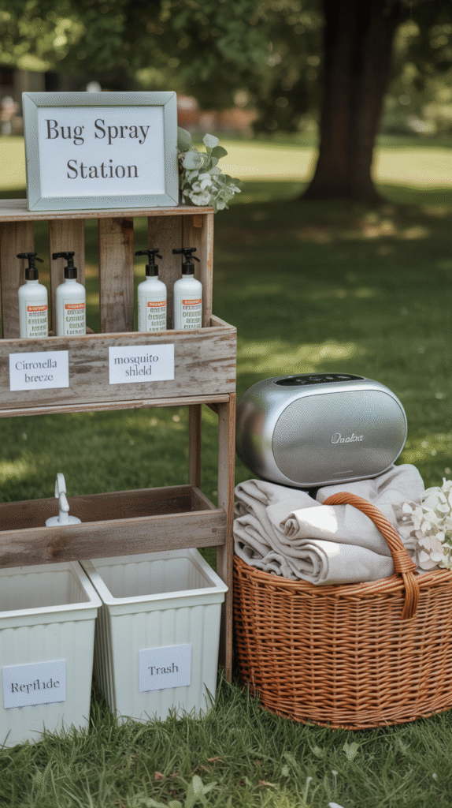

Get the Timing Right
Late afternoon into early evening tends to work best for a garden party, avoiding both peak midday heat and full darkness closing in too soon.
Checking seasonal sunset times and planning lighting accordingly keeps the party from losing its ambiance the moment the sun actually goes down.

Plan Entertainment That's Relaxed, Not Boring
Background music, a simple lawn game, or a designated photo spot all give guests something to do without requiring a fully organized activity schedule.
The goal is just enough structure to prevent dead air, not a full itinerary that turns a relaxed gathering into a managed event.
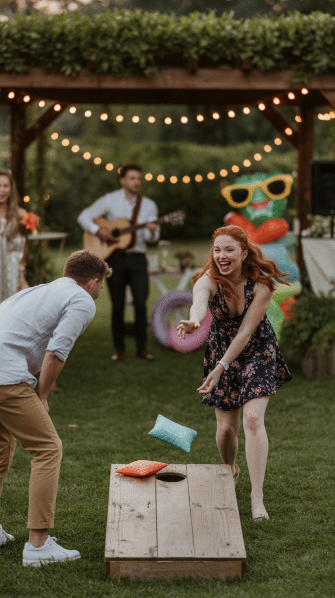
Set a Dress Code That Sets the Mood
A simple suggested dress code, garden casual, pastel tones, a specific era, helps guests show up in a way that reinforces the whole event's feel from the moment they arrive.
It doesn't need to be strict to work, even a loose suggestion shifts how the party photographs and feels as a whole.
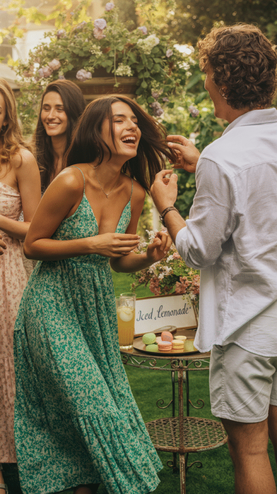
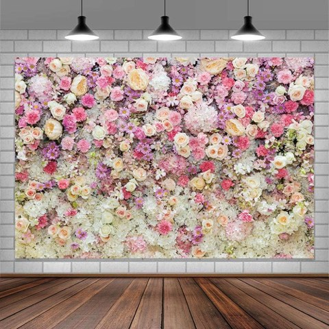
Pink Rose Floral Flower Wall Backdrop, 7 x 5 Ft, for Parties and Photos
Shop on AmazonDecorate Without Draining the Budget
A few higher-impact items, string lights, a runner down a table, fresh flowers in simple vessels, outperform a larger quantity of cheaper decor spread thin across the yard.
Borrowed or repurposed pieces, mixed in with a few new ones, keep the budget reasonable without the whole setup looking underdone.
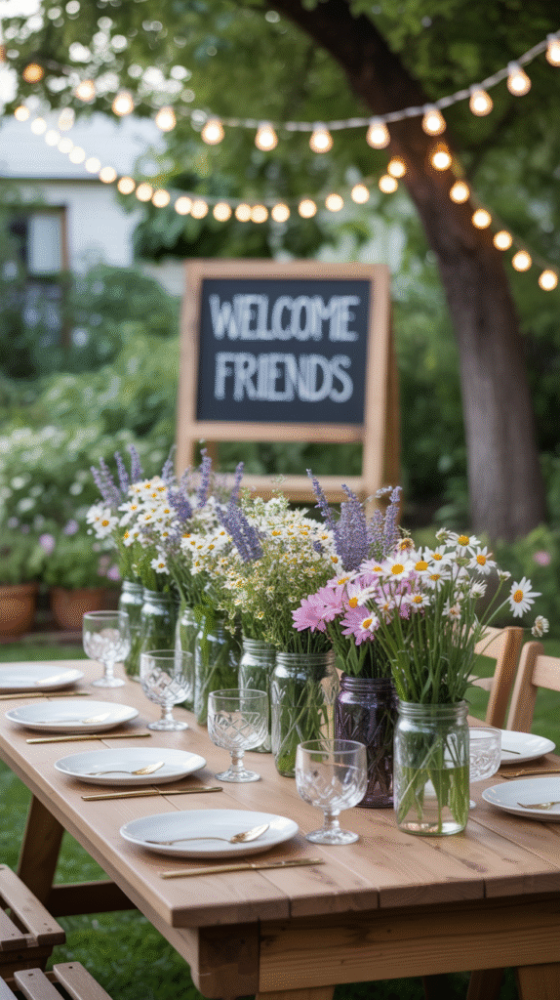
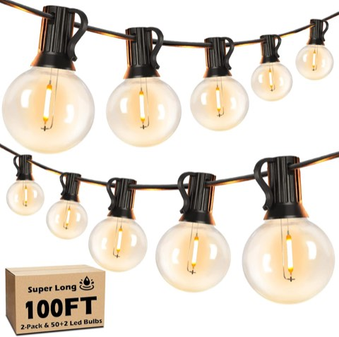
100 Ft LED Outdoor String Lights, 2 Pack, G40 Shatterproof Globe Bulbs, Dimmable
Shop on Amazon
Keep Food and Drinks Simple
A smaller menu of dishes that travel well outdoors and don't need last-minute plating beats an ambitious spread that pulls the host away from actually hosting the party.
A self-serve drink station solves a real logistics problem on its own, letting guests refill without needing the host to manage it constantly throughout the afternoon.
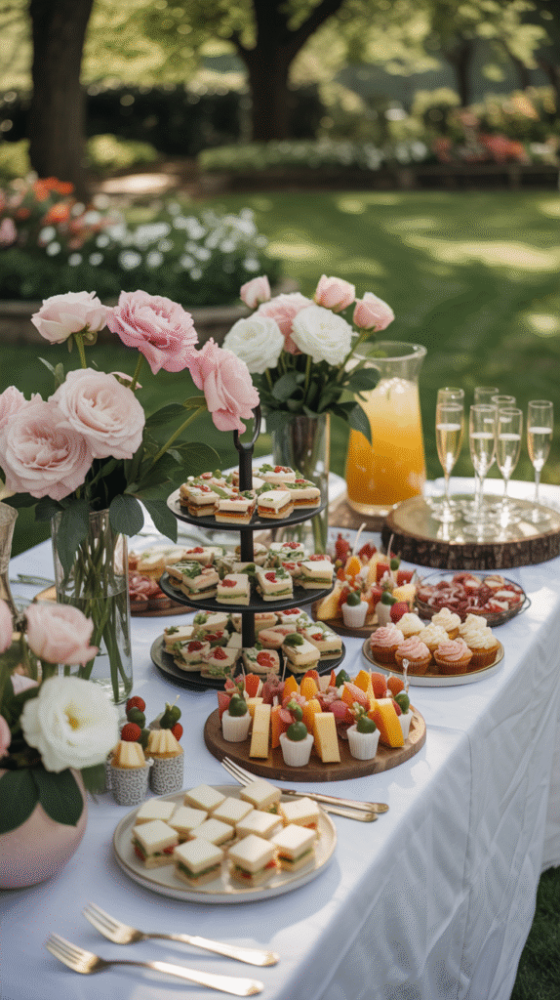
Let the Backyard Be the Main Character
Working with the yard's existing features, a mature tree, an established garden bed, natural shade, creates a far more cohesive setting than decor that fights against the space it's in.
Minimal additions placed in the right spots often outperform heavy styling spread thin across the whole yard.
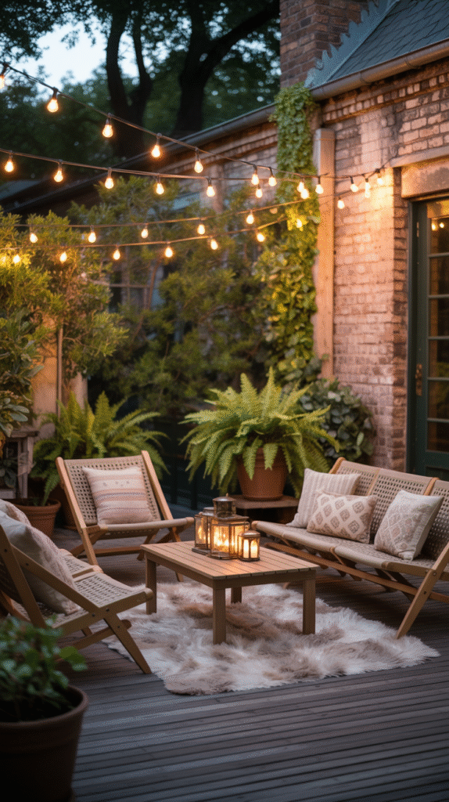
Choose a Theme That Actually Fits
A theme pulled from something genuine, a favorite color, a specific season, a personal interest, reads as far more authentic than one chosen purely because it happens to be trending.
This decision quietly shapes every other choice on this list, which makes it worth settling first, before decor or food planning even begins.
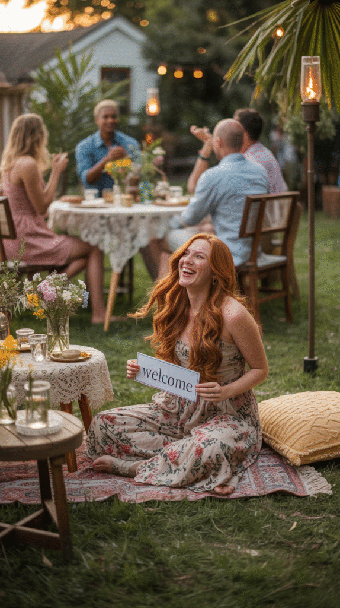
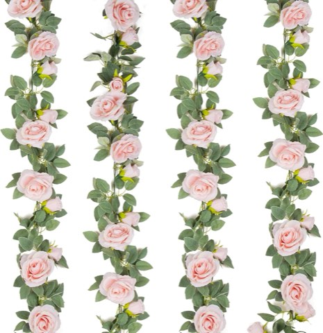
TELDRASSIL Artificial Rose Vine Garland, 4 Pcs, 26 Ft Total, Silk Hanging Vines
Shop on AmazonGo With the Flow
None of these elements need to be perfect on their own to add up to a genuinely good party.
Start with the theme and the essentials checklist, since both anchor everything else, then layer in decor and small extras as time and budget allow.
The best garden parties feel relaxed because the host actually is, and that only happens when the planning got handled well in advance instead of the day before.